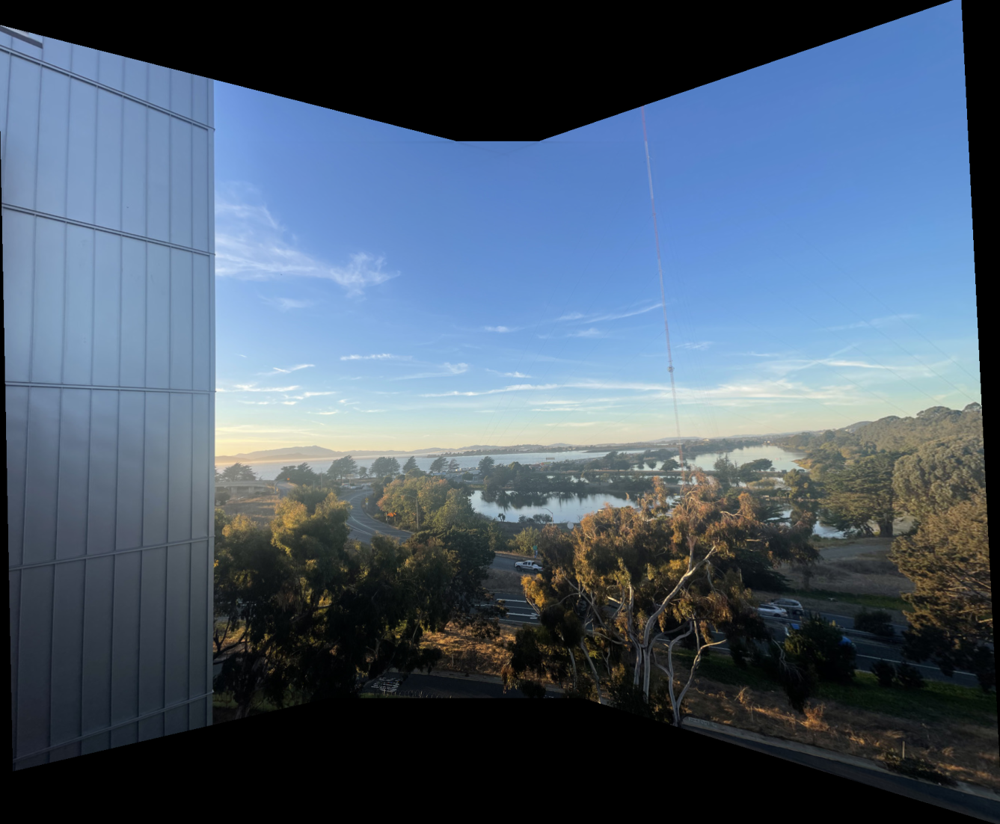

A Mosaic

Overview
In this project, I utilize homography to warp images and create a series of images into a mosaic. The first part of the project consists of taking pictures, calculating homographies between two images, warping the images, performing image rectification, and blending the images into a mosaic.
Shoot the Pictures & Recovering Homography
The first step is to take pictures of the images I will be using. I aimed for around 40% to 70% overlap between images to ensure smooth alignment. While taking the pictures, I needed to maintain the same center of projection and capture the images in quick succession to minimize changes in lighting and movement.
I took pictures at the library and plot points using (Link). By using these points, I need to find homography matrix of these two points for warping the image.
To find homography matrix using these points, I first stack each x and y points into the same matrix and use below equation to find unknowns, which are a, b, c, d, e, f, g and h.
\[
\begin{bmatrix}
wx' \\
wy' \\
w
\end{bmatrix}
=
\begin{bmatrix}
a & b & c \\
d & e & f \\
g & h & 1
\end{bmatrix}
\begin{bmatrix}
x \\
y \\
1
\end{bmatrix}
\]
Using systems of least squares, we can come up with this to find unknowns;
\[
\begin{bmatrix}
x & y & 1 & 0 & 0 & 0 & -xx' & -yx' \\
0 & 0 & 0 & x & y & 1 & -xy' & -yy'
\end{bmatrix}
\begin{bmatrix}
a \\
b \\
c \\
d \\
e \\
f \\
g \\
h
\end{bmatrix}
=
\begin{bmatrix}
x' \\
y'
\end{bmatrix}
\]
Warp the images
For warping the images, I created a function called warpImage that takes im (image) and H (homography) as inputs. I first define the corners of the image and warp them using the homography. By doing this, I can find the warp bounding box. Next, I get the minimum and maximum x & y values to create a mask, which I use to determine the destination coordinates for inverse warping. By mapping the coordinates from the output image back to the input image, we can ensure that the output image gets appropriate values. Finally, I used the map_coordinates function to set the pixels accordingly.
Image Rectification
Using homography and warping functions that I made, I can now perform 'rectification' of an image. I took photos to rectify and pick coordinates that I want it to be rectify and warp to proper coordinate to make it rectangle.
For this rectification, I used [0, 0], [0,100], [750, 0], [750, 100].
For this rectification, I used [0, 0], [0,200], [300, 0], [300, 200].
Blend the Images into a Mosaic
For this part, I first plot points using the tool for first to second and third to second image and using the points, I created homography matrices and warp first and third images.
Then, I perform warping.
With these warped images, I create a new image with a size that accommodates the warped portions from the first and third images, plus the size of the third image. Then, I added the first warped image, the third warped image, and the unwarped image.
This approach works reasonably well, but there are artifacts due to improper edge blending. To address this, I created a distance map for each image after masking them. I then summed up all the distance maps, normalizing by the total distance maps, and combined them with the high-frequency components of each image.
Here are ohter images that turned into a Mosaic.